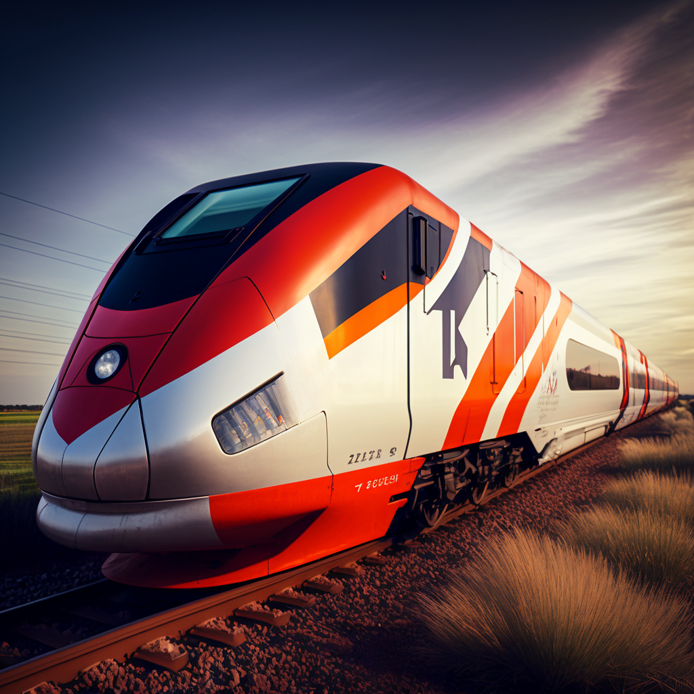
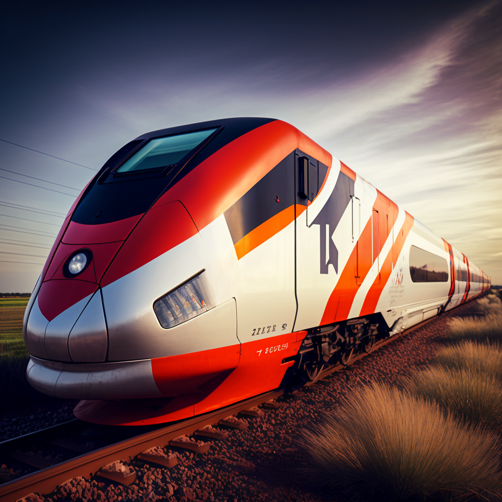

On continue...
J'ai demandé à Midjourney de générer un nouveau logo pour la SNCF
Et voici les trains du futur


 



Ici, une dissertation de philosophie générée par ChatGPT
Faut-il avoir peur de la technique?
Introduction
Depuis ses origines, la technique a toujours été un outil de l'homme pour améliorer sa vie, maîtriser son environnement et dépasser ses limites. Toutefois, le développement rapide et croissant des technologies soulève de nouvelles questions quant à leur impact sur l'humanité. Afin de déterminer s'il faut avoir peur de la technique, il convient d'analyser les avantages et les inconvénients de la technique, ainsi que les raisons qui pourraient justifier une crainte à son égard. Pour cela, nous commencerons par examiner comment la technique permet des avancées remarquables, puis nous aborderons les inquiétudes soulevées par son utilisation, et enfin, nous analyserons la responsabilité de l'homme dans la gestion de la technique.
I. La technique permet des avancées remarquables
A. La technique améliore les conditions de vie
Les innovations techniques ont permis d'améliorer de manière significative les conditions de vie de l'humanité. Les progrès médicaux, par exemple, ont révolutionné la prise en charge des maladies et la prévention grâce à des techniques de diagnostic précoce et de traitement plus efficaces. Comme l'affirmait Francis Bacon dans son ouvrage "Novum Organum" (1620), "la connaissance et la puissance humaine sont une seule et même chose." La médecine moderne en est un exemple frappant.
En outre, l'agriculture a bénéficié de l'essor des biotechnologies et de la mécanisation, ce qui a conduit à une production alimentaire accrue et à une meilleure répartition des ressources. Thomas Malthus, au XVIIIe siècle, avait prédit dans "Essai sur le principe de population" (1798) que la croissance démographique dépasserait la production alimentaire. Or, la technique a démenti cette hypothèse, permettant de nourrir une population mondiale en constante augmentation.
Les techniques de communication ont également joué un rôle majeur dans l'amélioration des conditions de vie en facilitant les échanges entre individus et en permettant la diffusion rapide de l'information. Les nouvelles technologies de l'information et de la communication, telles que l'Internet, les smartphones et les réseaux sociaux, ont bouleversé la manière dont les gens interagissent, travaillent et s'informent, rendant le monde plus connecté et accessible.
B. La technique aide à dépasser les limites humaines
La technique a également permis à l'homme de dépasser ses limites physiques et intellectuelles. Les prothèses et les implants ont redonné de la mobilité et de l'autonomie aux personnes handicapées, tandis que les outils numériques ont amélioré la productivité et la créativité humaine. Comme le disait Marshall McLuhan dans "Understanding Media" (1964), "nous façonnons nos outils, puis nos outils nous façonnent."
L'exploration spatiale, rendue possible grâce à la technique, a permis à l'homme de s'aventurer au-delà de notre planète, élargissant notre compréhension de l'univers et de notre place dans celui-ci. La célèbre phrase de Neil Armstrong lors de la première mission lunaire en 1969, "un petit pas pour l'homme, un bond de géant pour l'humanité", illustre bien l'impact des progrès techniques sur notre perception de nous-mêmes et de notre environnement.
Les avancées technologiques ont également permis de repousser les limites de notre connaissance dans divers domaines tels que la physique, la biologie et les sciences sociales. Les instruments et méthodes de recherche de pointe ont facilité la découverte de nouvelles lois naturelles, l'élucidation de phénomènes complexes et l'analyse de problèmes sociétaux à grande échelle.
II. L'utilisation de la technique suscite des inquiétudes
A. La technique pose des dilemmes éthiques et menace l'humanité
Malgré les avancées indéniables qu'elle procure, la technique soulève également des dilemmes éthiques et constitue une menace pour l'humanité. Les armes de destruction massive, par exemple, posent la question de la légitimité de leur utilisation et du risque de destruction totale qu'elles représentent. Comme le soulignait Albert Einstein dans une lettre adressée au président Roosevelt en 1939, l'utilisation de l'énergie nucléaire à des fins militaires pourrait entraîner des conséquences désastreuses pour l'humanité."
Par ailleurs, les manipulations génétiques et les biotechnologies soulèvent des questions d'ordre éthique concernant les limites à ne pas franchir et la définition même de l'humain. Dans son roman "Le Meilleur des mondes" (1932), Aldous Huxley décrit un futur dystopique où la technique permet de contrôler et de manipuler les individus dès leur conception, remettant en question la liberté et la dignité humaine.
Les innovations en matière d'intelligence artificielle et de robotique posent également des questions éthiques liées à la responsabilité, à l'emploi et à la vie privée. Les robots autonomes et les systèmes de surveillance automatisés peuvent potentiellement menacer l'emploi, la sécurité et la vie privée des individus. Dans "La Métamorphose des cloportes" (1965), Alain Jessua explore les conséquences d'une société où les machines remplacent progressivement les travailleurs humains, provoquant un sentiment d'aliénation et de déshumanisation.
B. La technique entraîne une dépendance et une perte de contrôle
La technique peut également engendrer une dépendance et une perte de contrôle pour les individus. Les réseaux sociaux et les outils numériques, par exemple, peuvent créer une addiction et une dépendance à la validation des autres, comme l'explique Sherry Turkle dans "Seuls ensemble" (2011). Par ailleurs, l'automatisation croissante des tâches peut entraîner une déshumanisation du travail et une perte de compétences pour les travailleurs.
Les avancées technologiques peuvent également entraîner une perte de contrôle sur notre environnement et nos vies. L'utilisation excessive des ressources naturelles et la pollution engendrée par l'industrialisation ont conduit à des problèmes environnementaux tels que le réchauffement climatique, la dégradation des écosystèmes et la perte de biodiversité. Ces conséquences négatives de la technique montrent que l'homme doit apprendre à maîtriser ses outils pour préserver son environnement et son propre bien-être.
III. La responsabilité de l'homme dans la gestion de la technique
A. L'homme doit maîtriser la technique et en faire un usage éthique
La crainte de la technique ne doit pas conduire à la rejeter en bloc, mais plutôt à mettre en place des mécanismes de contrôle et d'évaluation pour en faire un usage responsable et éthique. Comme le disait Descartes dans "Le Discours de la méthode" (1637), "la connaissance des choses extérieures nous rend maîtres de la nature". Il appartient donc à l'homme de maîtriser la technique et d'en orienter les développements vers des objectifs qui préservent l'intérêt général et le bien-être de l'humanité.
Un usage éthique de la technique implique de prendre en compte les conséquences sociales, environnementales et économiques des innovations, ainsi que de respecter les principes de justice, d'équité et de respect de la dignité humaine. De nombreux penseurs et philosophes, tels qu'Hannah Arendt dans "La Condition de l'homme moderne" (1958) ou encore Jürgen Habermas dans "La Technique et la Science comme idéologie" (1968), ont souligné la nécessité d'un tel questionnement éthique pour éviter les dérives potentielles de la technique.
B. L'éducation et la coopération internationale sont essentielles pour gérer la technique
L'éducation et la coopération internationale sont deux leviers essentiels pour gérer la technique de manière responsable. L'éducation permet de développer un esprit critique face aux innovations techniques et de former des citoyens capables de comprendre et d'évaluer les enjeux éthiques et sociaux liés à leur utilisation. La coopération internationale, quant à elle, favorise le partage des connaissances et la mise en place de régulations communes pour encadrer les développements techniques à l'échelle mondiale.
Des instances internationales telles que l'Organisation des Nations Unies (ONU) ou l'Organisation Mondiale de la Santé (OMS) œuvrent pour la mise en place de cadres réglementaires et de politiques publiques visant à encadrer l'utilisation et le développement des technologies, en particulier dans les domaines sensibles tels que la médecine, l'environnement et la sécurité.
Conclusion
En définitive, il ne s'agit pas tant d'avoir peur de la technique que de la maîtriser et de l'utiliser de manière éthique et responsable. Si les progrès techniques ont permis des avancées considérables pour l'humanité, ils soulèvent également des inquiétudes légitimes quant à leur impact sur nos vies et sur notre environnement. Il est donc crucial de mettre en place des mécanismes de contrôle et d'évaluation pour en faire un usage responsable et éthique. L'homme doit prendre conscience de sa responsabilité dans la gestion de la technique et s'appuyer sur l'éducation et la coopération internationale pour encadrer les développements techniques et préserver l'intérêt général et le bien-être de l'humanité.
Pour conclure, nous pourrions évoquer la réflexion du philosophe et sociologue français Jacques Ellul, qui dans son ouvrage "La Technique ou l'enjeu du siècle" (1954), met en garde contre la tentation de considérer la technique comme une fin en soi et insiste sur la nécessité de toujours questionner son rôle et sa place dans la construction d'une société juste et équilibrée. Cette prise de conscience collective est essentielle pour faire face aux défis posés par la technique et orienter son développement vers un avenir plus harmonieux et durable.
En guise d'ouverture à la réflexion, nous pourrions nous interroger sur les limites de la technique et la possibilité d'un futur où l'homme et la technique coexistent en harmonie. Comment concilier les progrès techniques avec le respect de l'environnement, des valeurs éthiques et des besoins fondamentaux de l'humanité ? Cette question nous rappelle que la technique n'est pas une fatalité, mais un outil dont l'utilisation dépend de notre volonté et de notre capacité à en faire un instrument au service du bien commun.
Et pour finir, un jeu
Je vous met au défi de gagner une partie. Ici l'exercice consistait à créer une IA avec une IA.
C'est quoi l'intelligence artificielle ?
La définition par ChatGPT
L'intelligence artificielle (IA) est un domaine multidisciplinaire de l'informatique qui vise à créer des systèmes et des machines capables d'imiter ou de surpasser certaines formes d'intelligence humaine. L'objectif principal est de concevoir des agents intelligents qui peuvent apprendre, raisonner, percevoir, interagir avec leur environnement et résoudre des problèmes complexes de manière autonome.
Parmi les principaux types d'IA, on distingue l'IA faible et l'IA forte. L'IA faible, également appelée IA étroite, se concentre sur la réalisation de tâches spécifiques sans posséder une compréhension générale ou une conscience. Les applications courantes de l'IA faible comprennent la reconnaissance d'image, la traduction automatique, la recommandation de produits et la détection de fraudes, entre autres.
L'IA forte, également connue sous le nom d'IA générale, vise à créer des machines qui peuvent comprendre, apprendre et raisonner de manière similaire à un être humain, et être capable d'exécuter toute tâche intellectuelle qu'un humain peut accomplir. Bien que l'IA forte soit un objectif de recherche ambitieux, elle n'a pas encore été réalisée et reste un sujet de débat et de spéculation.
En résumé, l'intelligence artificielle se réfère à la création de machines et de systèmes capables d'exécuter des tâches qui nécessitent habituellement l'intelligence humaine, avec des types d'IA tels que l'IA faible et l'IA forte, qui reflètent différentes approches et niveaux de sophistication.
Je n'aurais pas dit mieux. Je rajouterai tout de même quelques éléments sur les conséquences d'une telle technologie
Quelles conséquences ?
L'intelligence artificielle (IA) est sur le point de transformer le monde du travail, comme le souligne une récente étude de la banque Goldman Sachs (un article en français ici). Cette étude indique que la productivité des entreprises pourrait s'améliorer de manière significative grâce à l'automatisation et à l'optimisation des processus. Cependant, cette transition pourrait aussi mettre en danger près de 300 millions d'emplois qui pourraient être remplacés par des machines et des systèmes intelligents. Toutefois, comme le rappelle cet article, de nouvelles opportunités pourraient émerger, avec une demande croissante pour des compétences en IA, robotique et gestion des données.
En parallèle, la sécurité de nos données est un enjeu important dans le contexte de l'IA. Des systèmes comme ChatGPT, qui apprennent constamment grâce aux interactions avec les utilisateurs et intègrent ces informations dans leurs futures conversations, présentent un risque potentiel pour la confidentialité de nos données. L’entreprise SAMSUNG en a fait les frais, la preuve ici. Il est crucial de mettre en place des mesures de protection appropriées pour assurer la sécurité des informations.
De plus, l'IA pourrait aussi favoriser l'apparition de nouveaux virus informatiques. Par exemple, un chercheur en sécurité a récemment réussi à utiliser ChatGPT, malgré ses garde-fous, pour créer un virus indétectable par les logiciels antivirus traditionnels (un article ici). Cela souligne la nécessité de développer des solutions de sécurité informatique plus avancées pour faire face aux menaces émergentes liées à l'IA.
D'autres défis, tels que le vol de mots de passe par des pirates informatiques ou la désinformation due à la création d'images trompeuses, sont également à prendre en compte face aux enjeux posés par l'IA. Nous devons tous nous préparer et nous adapter à ces changements en renforçant notre sécurité informatique, en nous formant aux nouvelles technologies et en élaborant des stratégies pour tirer parti des opportunités offertes par l'IA tout en minimisant les risques potentiels.